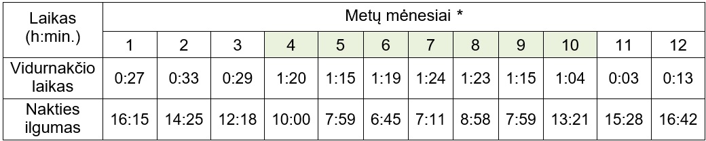
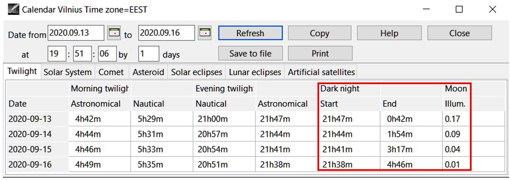
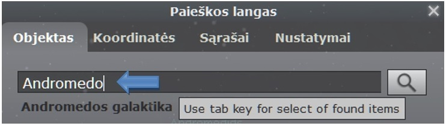
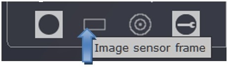
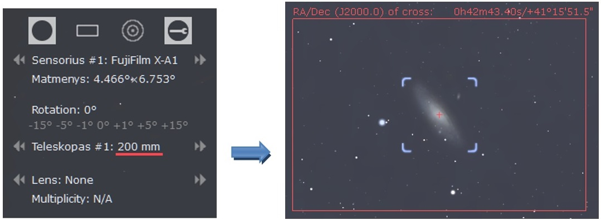
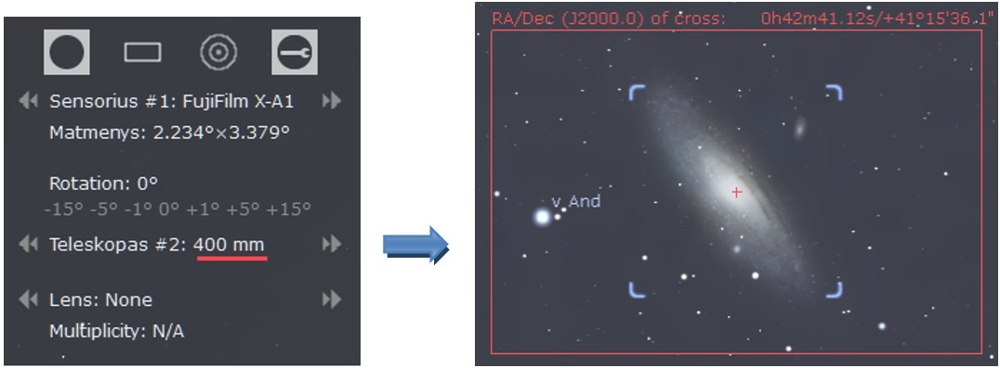

4. Naktinių išvykų planavimas
4.1. Data ir laikas
Rinkitės ryškius, lengvai atpažįstamus objektus ir būkite pasirengę fotografuoti, kada jie geriausiai matomi mūsų platumose. Lietuvoje pusės žvaigždynų išvis nematome, o kai kurie įdomesni objektai „apsilanko“ tik trumpam (pvz., Oriono ūkas pasirodo tik žiemą).Naktinio dangaus objektų matomumą (padėtį) pagal vietovę, metų ir paros laiką aiškiai apibrėžia horizontinė koordinačių sistema. Ji susieta su stebėtoju iš Žemės ir šiuo atveju labai praktiška, nes atskaitos taškas - jūsų buvimo vieta.

Būtinai pažiūrėkite koks ir kur bus Mėnulis (pasitikrinkite su ta pačia Stellarium). Fotografuoti dangų geriausia, kai jo visai nėra, tačiau kraštovaizdį geriau fotografuoti apšviestą, tuomet idealu, jei Mėnulis teka fotosesijos pabaigoje ar leidžiasi pradžioje.
Fotografuoti geriausia kai dangus pats tamsiausias - maždaug nakties vidury tarp prieblandos ir aušros. Tai yra tas paros laikas, kai Saulė būna žemiausiai horizonto ir jis vadinamas tikruoju arba astronominiu vidurnakčiu (Saulės altitudę rodo Stellarium). Aišku, nepalankiausios yra viduvasario naktys, kada pilnai nesutemus, vėl pradeda švisti. (Jeigu dar nežinojote, mūsų laikrodžiai niekada nerodo tikrojo laiko.) Dėl pãsviro Žemės sukimosi tikrasis vidurnakčio metas varijuoja pirmyn - atgal apie 15 min., tačiau didžiausias skirtumas - net 1,5 valandos - pasidaro įvedus vasaros*** laiką (4 lent.). Netgi Saulės laikui artimiausias juostinis (žiemos) laikas kartais neatitinka puse valandos.
4 lentelė. Tikrojo vidurnakčio laikai Lietuvoje (UTC+2/UTC+3) Geriausią nakties laiką jums parodys nemokama Cartes du Ciel programa:

Tamsiausias nakties periodas - Dark night, Mėnulio šviesos intensyvumas - Moon Illum.
4.2. Vietovė
Galite pamėginti įvertinti vietą ir nuotoliniu būdu - internetiniu įrankiu Google Earth.
4.3. Orai
Čia planavimas daugiau hipotetinis, tik 5 dienų prognozės gali būti tikslios iki 90 proc. Įvertinus giedrų naktų skaičių Lietuvoje, gal geriau pirmiau apskritai sulaukti tų giedrų naktų, o jau tada žiūrėti, kokie objektai matomi ir ką galima nufotografuoti tuo metu. Vis tiek sekite orų/dulkių prognozes, žr. 3 sk.4.4. Matymo laukas
Matymo laukas (angl. - field of view) yra vaizdas, kurį pro objektyvą „mato“ ir fiksuoja fotoaparato jutiklis. Fotografijoje dar vadinamas matymo kampu, optikoje - erdviniu kampu, astronomijoje - kampiniu plotu.Skirtingo dydžio objektams reikalingas skirtingas fotokameros matymo laukas. Matymo laukas priklauso nuo židinio nuotolio ir jutiklio matmenų (žr. 3.7 sk.). Konkrečiu atveju fotoaparato ir objektyvo pasirinkimas priklauso nuo dangaus objekto kampinio dydžio ir fotografo užmanymo, pavyzdžiui, ar jūs norite, kad nuotrauka aprėptų visą Oriono žvaigždyną, ar įrėmintų tik Oriono ūką ?
4.4.1. „Skautiškas“ metodas
Jei dar nežinojote, lauko sąlygomis apytikslį kampinį dydį galima nustatyti ištiestõs rankos pirštų pagalba - teliks pasirinkti tinkantį objektyvą (5 lent.).4.4.2. Formulės
Matymo kampus apytiksliai galima apskaičiuoti pagal formules.Vertikaliai aprėpiamas kampas:
Horizontaliai aprėpiamas kampas:
4.4.3. Programos
4.4.3.1. Gražias matymo lauko vizualizacijas kuria Stellarium įskiepis Ocular.1. Okuliarai langą atversite: Nustatymų langas [F2] - Papildiniai - Okuliarai - konfigūruoti
arba ekrano viršuje paspaudę rakto simbolį:

2. Sensors skiltyje paspaudę Add, surašykite jutiklio techninius parametrus, fotoaparato pavadinimą (Name, Resolution, Chip, Pixel). Įvedamų įrenginių kiekis berõds neribotas.
3. Telescopes skiltyje spragtelėję Add, įrašykite objektyvo pavadinimą ir židinio nuotolį (Name, Focal lenght). Objektyvų įrašų kiekis taip pat neribojamas. Kintamo židinio objektyvams reikia atskirai surašyti visus nuotolius, kuriuos naudosite. Horizontal flip, Vertical flip, Equatorial mount parametrų nežymėkite, Diameter šiuo atveju išvis nesvarbus (gali būti koks).
4. Spauskite [F3], įrašykite ieškomą objektą:

5. Spustelkite ant stačiakampio simbolio Image sensor frame:

6. Pasirinkdami fotokamerą (Sensorius) ir objektyvą (Teleskopas), matysite kaip įrėminamas jūsų objektas:


Stellarium pagalba objekto dydį dar galima sužinoti įjungus azimutinio tinklelio rodymą [Z]. Tinklelis sugraduotas laipsniais ir nesunku nustatyti, kad, pvz., Oriono žvaigždynas užima maždaug 30° x 30° dangaus plotą - tiktų objektyvai ≤ 35 mm FF arba ≤ 24 mm APS-C (žr. 5 lent.).
4.4.3.2. Blackwater Skies Imaging Toolbox internetinė programa:
1. Pixel size calculator įveskite pikselių matmenis, židinio nuotolį
2. Spauskite Calculate.
1 QE - viso fotonų srauto ir įrašytų fotonų santykis. Paprastų jutiklių QE = 30 - 40 %, CCD - nuo 40 iki 90 % (palyginimui, žmogaus akies QE = 1 - 5 %).
2 Diafragma - keičiamo dydžio objektyvo anga, reguliuojanti praleidžiamą šviesos pluoštą.
3 Deklinacija - šviesulio kampinis nuotolis nuo dangaus ekvatoriaus (rodo Stellarium programa).
4 Histograma - nuotraukos šviesumų pasiskirstymo stulpelinė logaritminė diagrama..
5 ETTR (angl. "Exposure To The Right") - metodika, kai ekspozicija daroma kuo dešiniau histogramos.
6 APSC (angl. "Advanced Photo System type C") - juostinio APS C ("Classic") formato dydžio jutiklis (23 x 15 mm).
7 FF (angl. "Full Frame") - viso kadro juostinio 35 mm formato dydžio jutiklis (36 x 24 mm).
8 TWAN (angl. "The World At Night") - tarptautinė astrofotografijos organizacija „Pasaulis naktį“.
9 Zodiako šviesa - silpnas dangaus švytėjimas naktį zodiako juostos srityse, matomas vakaruose Saulei nusileidus ir rytuose prieš jai patekant. Susidaro Saulės šviesai sklindant pro įvairias dulkes kosmose.